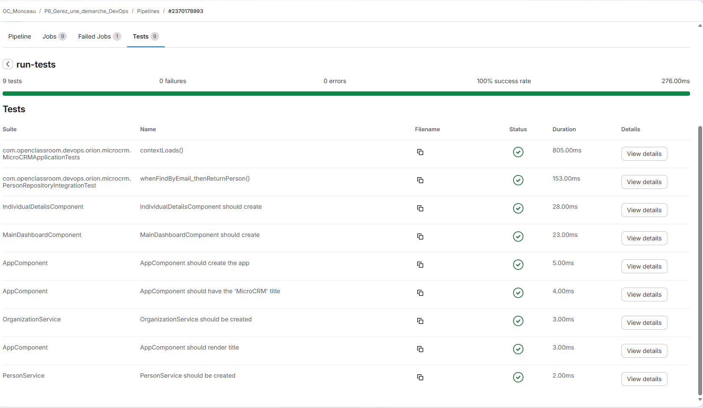

Le job de tests exécute automatiquement les tests de l'application dans le pipeline d'intégration continue. Une fois les tests terminés, les résultats sont enregistrés et deviennent consultables directement dans l’interface de GitLab. Cela permet aux développeurs de vérifier rapidement si les modifications du code respectent le bon fonctionnement de l’application avant de passer à l’étape suivante du pipeline, comme la génération du build.
